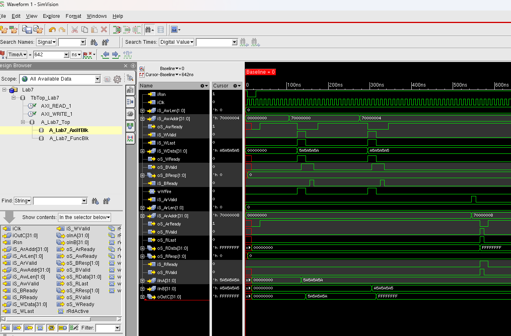

3. AXI Channel Bus
AXI는 고성능 SoC에서 많이 쓰이는 channel 기반 bus입니다. APB는 register 제어에 단순하고, AHB는 address/data phase가 pipeline처럼 겹쳐 흐르는 구조였다면, AXI는 write 주소, write data, write response, read 주소, read data를 서로 다른 채널로 분리합니다. 숭실대 인턴에서는 이 구조를 Lab7 AXI slave 실습으로 확인했습니다.
3.1 AXI가 어려운 이유: 하나의 전송이 여러 채널로 나뉜다
AXI를 처음 볼 때 가장 헷갈리는 점은 write/read가 한 덩어리로 움직이지 않는다는 것입니다. write transaction은 AW, W, B 세 채널로, read transaction은 AR, R 두 채널로 나뉩니다. 그래서 AXI에서는 “주소를 보냈는가”, “데이터를 보냈는가”, “응답을 받았는가”를 각각 따로 확인해야 합니다.
수업에서는 이 구조를 AHB와 비교했습니다. AHB는 하나의 bus에서 address phase와 data phase가 겹치는 구조였지만, AXI는 아예 read/write 경로와 address/data/response 경로를 독립 채널로 나눕니다. 그 대신 각 채널은 VALID/READY handshake로 전송 성립 시점을 명확히 정합니다.
VALID와 READY가 같은 cycle에 함께 올라올 때만 그 채널의 전송이 성립합니다
VALID는 보내는 쪽이 “지금 정보가 유효하다”고 말하는 신호이고, READY는 받는 쪽이 “지금 받을 수 있다”고 말하는 신호입니다. 둘 중 하나만 올라오면 아직 transfer가 끝난 것이 아닙니다.
3.2 Write path와 Read path
write는 AW, W, B 순서로 이해하면 됩니다. AW channel은 write할 주소를 전달하고, W channel은 실제 data를 전달하며, B channel은 write가 끝났다는 response를 slave가 master에게 돌려주는 경로입니다. read는 AR, R로 나뉩니다. AR channel은 read할 주소를 전달하고, R channel은 read data와 response를 반환합니다.
- AW
- Write address channel. 어디에 쓸지 전달합니다.
- W
- Write data channel. 어떤 값을 쓸지 전달하고, burst에서는 WLAST로 마지막 beat를 표시합니다.
- B
- Write response channel. write transaction이 정상적으로 끝났는지 반환합니다.
- AR
- Read address channel. 어디를 읽을지 전달합니다.
- R
- Read data channel. 읽은 data와 response를 반환하고, RLAST로 마지막 beat를 표시합니다.
3.3 Lab7에서 한 일: AXI slave register block
Lab7에서는 AXI slave interface를 가진 register block을 구현했습니다. 내부에는 입력 register A/B와 출력 register C가 있고, AXI write transaction으로 A/B를 쓰고 AXI read transaction으로 A/B/C 값을 읽는 구조입니다. Lab2와 Lab5에서 다뤘던 register access가 AXI channel 구조로 바뀐 버전이라고 볼 수 있습니다.
이 실습에서 중요한 점은 write와 read가 각각 다른 채널 흐름을 가진다는 것입니다. write에서는 AW handshake로 주소를 받고, W handshake로 data를 받은 뒤, B response를 반환해야 합니다. read에서는 AR handshake로 주소를 받고, R channel로 data를 반환해야 합니다. Lab7 RTL은 1~4 beat burst를 다루며, word-aligned address와 OKAY response를 기준으로 동작하도록 구성되어 있었습니다.
AW → W → B
주소 handshake, data beat 전송, response 반환 순서가 맞는지 검증했습니다.
AR → R
read 주소를 받은 뒤 data와 response를 R channel로 반환하고 RLAST를 확인했습니다.
채널별 책임 분리
주소, data, response가 서로 다른 handshake 조건으로 움직이므로 파형을 채널별로 나누어 봤습니다.
3.4 파형으로 확인한 AXI 동작
